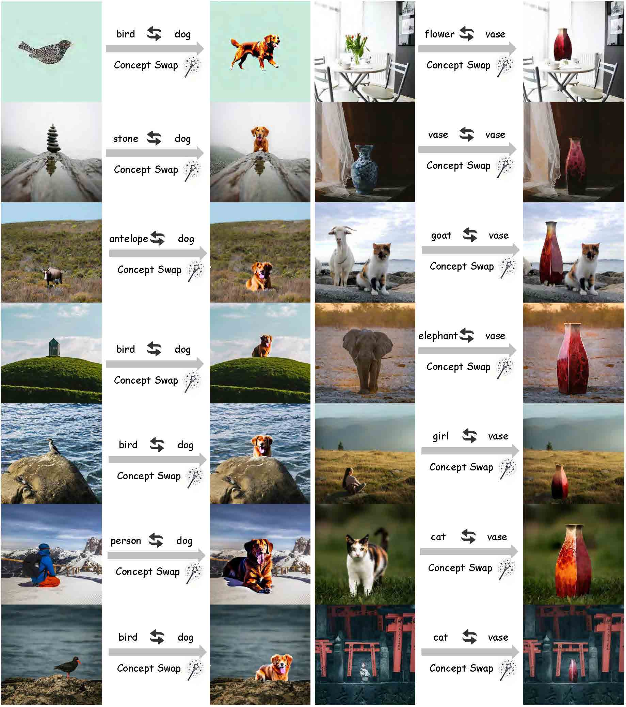
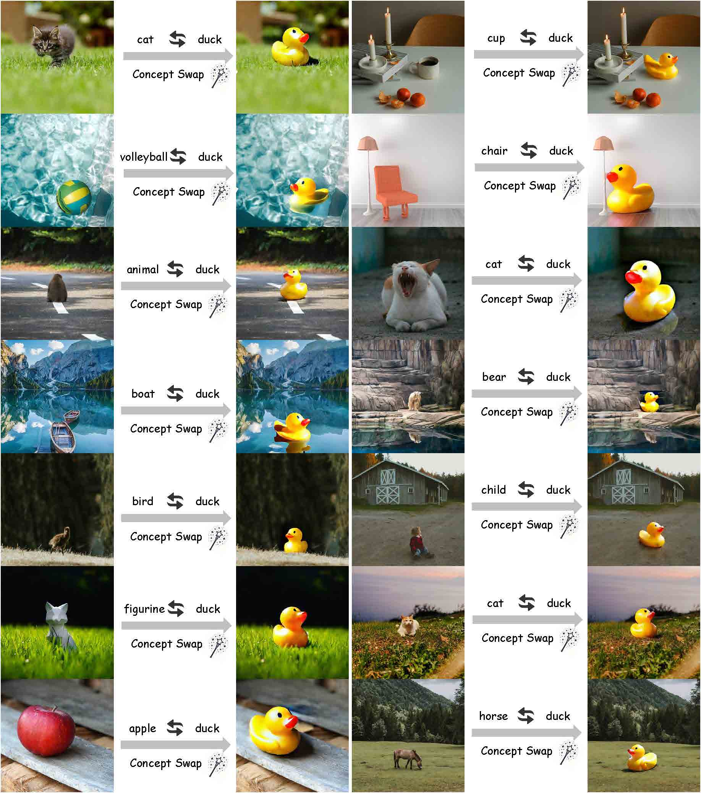
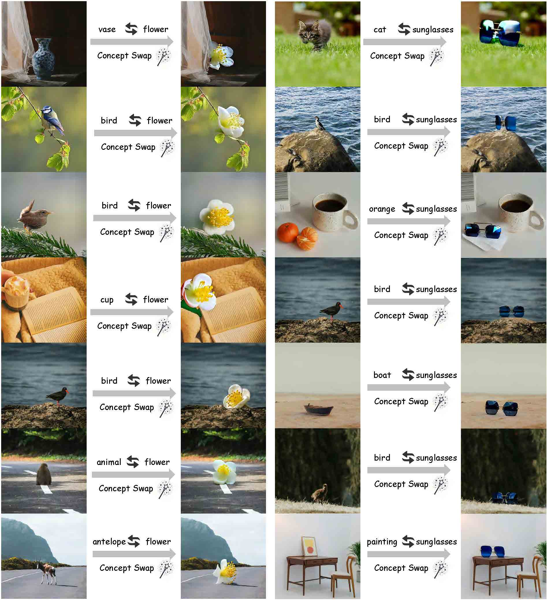

Abstract
Recent advances in Customized Concept Swapping (CCS) enable a text-to-image model to swap a concept in the source image with a customized target concept. However, the existing methods still face the challenges of inconsistency and inefficiency. They struggle to maintain consistency in both the foreground and background during concept swapping, especially when the shape difference is large between objects. Additionally, they either require time-consuming training processes or involve redundant calculations during inference. To tackle these issues, we introduce InstantSwap, a new CCS method that aims to handle sharp shape disparity at speed. Specifically, we first extract the bbox of the object in the source image automatically based on attention map analysis and leverage the bbox to achieve both foreground and background consistency. For background consistency, we remove the gradient outside the bbox during the swapping process so that the background is free from being modified. For foreground consistency, we employ a cross-attention mechanism to inject semantic information into both source and target concepts inside the box. This helps learn semantic-enhanced representations that encourage the swapping process to focus on the foreground objects. To improve swapping speed, we avoid computing gradients at each timestep but instead calculate them periodically to reduce the number of forward passes, which improves efficiency a lot with a little sacrifice on performance. Finally, we establish a benchmark dataset to facilitate comprehensive evaluation. Extensive evaluations demonstrate the superiority and versatility of InstantSwap.
Method

Overall pipeline of InstantSwap. We first obtain the bbox of the source concept automatically. The obtained bbox is input into SECR in both the source and target branches to enhance the foreground swapping consistency. Additionally, the source and target branches generate the prediction of noise for the source and target images based on their respective prompts. The predicted noise, along with the bbox, is used for the BGM to preserve background consistency.
Comparison

Our InstantSwap demonstrates excellent performance in maintaining consistency in both the foreground and background compared to other methods.
Gallery

More qualitative results of the barn and candle.

More qualitative results of the cat and cup.

More qualitative results of the dog and vase.

More qualitative results of the duck.

More qualitative results of the flower and sunglasses.

More qualitative results of the teapot.
BibTeX
@article{zhu2024instantswap,
title={InstantSwap: Fast Customized Concept Swapping across Sharp Shape Differences},
author={Zhu, Chenyang and Li, Kai and Ma, Yue and Tang, Longxiang and Fang, Chengyu and Chen, Chubin and Chen, Qifeng and Li, Xiu},
journal={arXiv preprint arXiv:2412.01197},
year={2024}
}